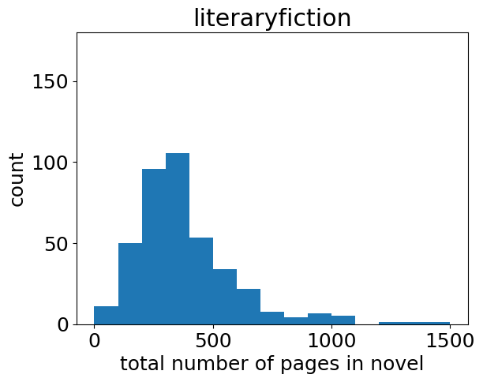

Page counts and word counts by literary genre
Statistics based on scraped data August 15, 2018
Many websites give rough estimates of the number of pages or words per novel for various literary genres, but accurate, data-based statistics are difficult to find. Here's a breakdown of some stats I produced for eight of the top literary genres, based on the analysis of thousands of published novels.
How many pages in a novel?
Page counts were obtained by scraping the Goodreads website. For each genre, I took the first ≈400 novels from reader-voted lists of the top novels in that genre,1 e.g. The Best Fantasy Books, All Time Favorite Romance Novels, etc.
Notes: I removed entries that were not single novels, such as anthologies, poetry collections, or entire series of books collected in one volume/one Goodreads entry. I also removed books listed as having 0 pages, so anything in the first bin of each histogram ("0-X pages") really does have a non-zero number of pages less than X.
Total number of novels included in the study: 3200
Some genres (fantasy, historical, science fiction and literary fiction) have a very broad distribution of page-count values with a long tail, and historical novels in particular can be extremely long. Romance, thrillers, westerns and crime fiction have a much narrower distribution. Here's the same data in a table:
| Genre | Number of pages (interquartile range) |
|---|---|
| western | 230-384 |
| literary fiction | 244-454 |
| science fiction | 253-465 |
| thrillers | 279-432 |
| mystery and crime | 283-432 |
| romance | 309-432 |
| fantasy | 304-512 |
| historical | 352-600 |
How many words per page?
When discussing unpublished manuscripts, English-speaking writers and editors usually count words and not pages, so I also wanted to look at the number of words per novel. It's not easy to get hold of hard data on that. In general, publishers are reluctant to release this information.
I pieced together a list of word counts for ≈100 novels, based on various exact novel word counts I found on the internet,2 and a count (using linux wc) of books I could download in electronic format. I then crossed this with the page counts I already had from Goodreads.
Note: this data is heavily biased towards very well-known books, because those are the books it's easiest to get word-count data for. Also, a book with several editions will have different page counts and therefore different average words-per-page for each edition. I took the edition listed by Goodreads in each case.
First of all, here's the distribution of words-per-page values.
A few minutes of Googling produces the often-quoted figure of 250 to 300 words per page as an industry standard for published novels. For the 100 books in this study, the average number of words per page is 293.
Now, let's take a look at the words-per-page as a function of the total number of pages in the book.
I like the above graphic because it clearly shows some of the tactics publishers employ. At low-to-medium words counts, the number of words per page is correlated with the book's total word count. In other words, for shorter novels publishers put less words per page, presumably to make the book thicker and seem more worth buying. As novels grow longer, more words are squeezed onto a single page, presumably to stop the book getting too thick and too expensive to print. Above 400-500 words per page or so, we reach a plateau where publishers simply can't squeeze more words onto the page and the only option is to add more pages.
How many words in a novel?
Since writers tend to be interested in word counts rather than page counts, here's the above genre-specific data converted from page count to word count. The words-per-page conversion factor used for each individual book was predicted based on the page count scraped from Goodreads, using a regularized polynomial regression model fitted to the above words-per-page data.
| Genre | Number of words (interquartile range) |
|---|---|
| western | 63k-110k |
| literary fiction | 67k-134k |
| science fiction | 69k-138k |
| thrillers | 77k-127k |
| mystery and crime | 78k-127k |
| romance | 86k-127k |
| fantasy | 85k-155k |
| historical | 100k-188k |
Notes and footnotes
Open source libraries used: Data scraped and parsed with requests and BeautifulSoup, analysed with pandas, plotted with matplotlib
1. [Text of footnote 1]#
'romance': 'https://www.goodreads.com/list/show/12362.All_Time_Favorite_Romance_Novels', 'science fiction': 'https://www.goodreads.com/list/show/19341.Best_Science_Fiction', 'fantasy': 'https://www.goodreads.com/list/show/728.The_Best_Fantasy_Books', 'western': 'https://www.goodreads.com/list/show/1243.Best_Westerns', 'literary fiction': 'https://www.goodreads.com/list/show/1425.Best_Literary_Fiction_', 'thrillers': 'https://www.goodreads.com/list/show/1112.Best_Thrillers', 'mystery and crime': 'https://www.goodreads.com/list/show/11.Best_Crime_Mystery_Books', 'historical': 'https://www.goodreads.com/list/show/15.Best_Historical_Fiction',2. [Text of footnote 2]#
https://textfiles.com/etext/FICTION/, http://commonplacebook.com/art/books/word-count-for-famous-novels/, http://www.arbookfind.com/default.aspx